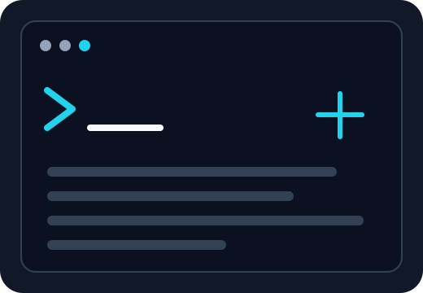

Developer
PortHunter
A Bash-based Nmap automation project designed to streamline full TCP port discovery and targeted service enumeration while keeping the workflow simple and repeatable.
View my GitHubPenetration Testing Portfolio
I am Edgar Garcia, a penetration tester focused on offensive security, web application testing, network enumeration, and practical security automation. Writeup Vault presents my methodology through authorized labs and technical projects.

Portfolio snapshot
Selected work
Beyond the labs
I use personal projects to turn repetitive security work into documented and reusable workflows.
Developer
A Bash-based Nmap automation project designed to streamline full TCP port discovery and targeted service enumeration while keeping the workflow simple and repeatable.
View my GitHubFounder
A cybersecurity initiative focused on practical security audits for small and medium-sized businesses, helping identify weaknesses and reduce exposure to common cyberattacks.
Learn more about my work